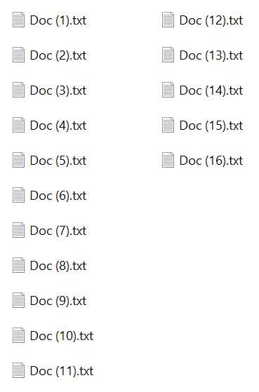

Windows Explorer sorts files with digits in a more natural way than build-in C# functions. It’s possible to use this sorting method in any app for Windows.

For natural string sorting StrCmpLogicalW function is used. So it can be used in console and Windows apps. For ASP.NET you need to find another solution.
I find it useful to use Microsoft.Windows.CsWin32 package for system interop. To use StrCmpLogicalW function the following steps are required:
- Add the package reference to
Microsoft.Windows.CsWin32package
dotnet add package Microsoft.Windows.CsWin32 --version 0.3.106
- Add
NativeMethods.txtfile to the root of the project folder with the following content:
StrCmpLogical
This seems more complicated than manual adding of a static method with DllImport attribute. But this approach reduces the complexity of converting WinAPI syntax to C#. It also uses safer patterns out of the box. For example, it uses SafeHandler if required.
The following C# code shows how to implement IComparer with StrCmpLogicalW function:
class StringLogicalComparer : IComparer<string>
{
public int Compare(string? x, string? y)
{
return (x == null || y == null)
? string.Compare(x, y)
: Windows.Win32.PInvoke.StrCmpLogical(x, y);
}
}
With this string logical comparer all your strings will be sorted in a natural order, just like Windows Explorer does.